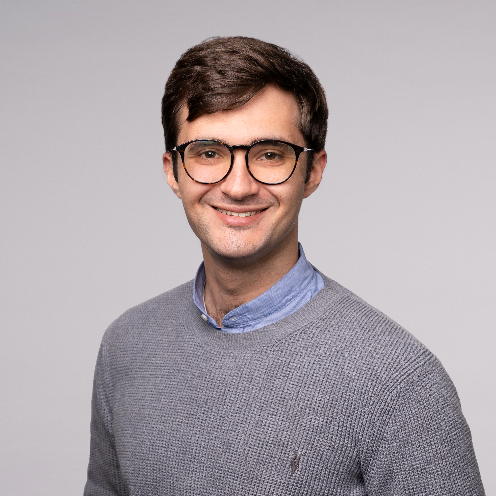

|
Andriy Novykov
Senior software engineer specializing in systems observability, security, and infrastructure for AI research.
Built an eBPF-based AI agent runtime monitoring platform end-to-end as Cofounder/CTO of Aethra Labs, including full-stack ingestion + dashboard and AI-based trajectory monitors.
Previously led GPU cluster and petabyte-scale storage at the Center for AI Safety, supporting high-impact ML safety research.
Email /
CV /
Github /
LinkedIn
San Francisco Bay Area
|

|
|
Summary
Senior software engineer specializing in systems observability, security, and infrastructure for AI research. Built an eBPF-based AI agent runtime monitoring platform end-to-end as Cofounder/CTO of Aethra Labs (YC-accepted company), including full-stack ingestion + dashboard and AI-based trajectory monitors. Previously led GPU cluster and petabyte-scale storage at the Center for AI Safety supporting high-impact ML safety research.
|
Aethra Labs
Cofounder & CTO
Jul 15, 2025 - Dec 31, 2025
San Francisco & Berkeley, CA
|
- Built a system-level AI agent runtime monitoring platform using eBPF (libbpf) and a privileged host daemon to capture complete traces of agent behavior independent of the agent application.
- Implemented PID-targeted instrumentation that attaches to a running agent process and records correlated system activity (process tree, file I/O, network traffic, shell activity), enabling forensic-style replay and auditing of agent runs.
- Achieved low monitoring overhead via eBPF-based collection (~3% CPU overhead on monitored agent processes) while capturing high-level context (inputs/outputs and available agent telemetry) alongside low-level actions.
- Shipped full-stack product (Python + TypeScript/JavaScript + Docker): collectors/exporters/forwarders, backend ingestion services, and a frontend dashboard for trace search, visualization, and investigation workflows.
- Developed AI-based trajectory monitors that review agent traces and flag potentially suspicious or misaligned behaviors; integrated monitors into analysis workflows for rapid iteration.
- Integrated monitoring into Redwood Research evaluation/control environments by installing the daemon on hosts running the agent + environment and attaching monitoring to the target agent PID.
- Stood up red-team tooling on less than 24 hours notice for a time-boxed engagement evaluating xAI Grok models: deployed a VPS-hosted OpenWebUI chat interface backed by a LiteLLM proxy to enable structured interaction and centralized chat logging/export for later analysis.
- Company accepted to Y Combinator (YC); selected for the 50 Years 5050 AI accelerator cohort; first company accepted into Constellations startup incubator; angel investment from Geoff Ralston.
- Transitioned engineering ownership to an incoming technical cofounder with architecture documentation, runbooks, and operational handoff.
|
The Center for AI Safety (CAIS)
Lead Infrastructure Engineer
Feb 2023 - Jul 15, 2025
|
- Owned infrastructure for a free-to-use ML research GPU cluster (Oracle Cloud Infrastructure, Slurm) with 256 GPUs and distributed parallel filesystem (WekaFS), supporting 110+ papers and 5000+ citations in less than 2 years; $3.5M+ annual budget.
- Led deployment of converged petabyte-scale WekaFS, reducing storage cost/GB by 90% and delivering $900,000+ annual cost savings.
- Executed full cluster OS migration from Oracle Linux 7 to Ubuntu 22.04 via complete redeploy: rewrote Ansible automation, migrated LDAP/SlurmDB/Nix store, and backed up/restored nearly 200 TB and 150M+ files with minimal downtime goal (less than 48 hours).
|
Bidtellect (acquired by Simpli.fi)
Platform Software Engineer
Jun 2020 - Feb 2023
|
- Built, debugged, and maintained RESTful APIs, ETL pipelines, and SQL/NoSQL data systems powering a platform processing 6B+ auction requests per day.
- Performed code reviews and operational support to improve reliability, correctness, and maintainability across production services.
- Supported team execution as Scrum Lead by scheduling ceremonies, unblocking engineers, and tracking sprint delivery.
|
Knoebel Institute for Healthy Aging
Research Assistant / Electrical Engineer
Sep 2018 - Jun 2020
|
- Designed and built an advanced neural recording apparatus (tetrode drive) improving reliability and performance compared to conventional electrodes.
- Tested wireless neural recording devices and recorded rodent motor cortex activity to study the relationship between neural signals and motor movement for movement-prediction modeling.
- Supported research efforts resulting in $5,500 in awarded grants.
|
|
Publications
Remote Labor Index: Measuring AI Automation of Remote Work (arXiv:2510.26787).
• Cited contributor; contributed to the initial evaluation platform design during early development. remotelabor.ai
Tamper-Resistant Safeguards for Open-Weight LLMs (arXiv:2408.00761, ICLR 2025).
• Acknowledged for providing compute infrastructure support via the Center for AI Safety.
Safetywashing: Do AI Safety Benchmarks Actually Measure Safety? (arXiv:2407.21792).
• Acknowledged for compute infrastructure support at the Center for AI Safety.
|
|
Technical Skills
Languages: Python, TypeScript/JavaScript, Bash, C/C++, C#, Java
Systems & Security: Linux, eBPF, libbpf, system instrumentation, tamper-resistant telemetry (privileged collection)
Infra/DevOps: Slurm, Ansible, Terraform, Docker, Kubernetes, Grafana, Prometheus, VictoriaMetrics
Cloud & Data: Oracle Cloud Infrastructure (OCI), AWS, GCP, PostgreSQL, MySQL, MS SQL Server, NoSQL databases
|
|
Education
University of Denver
Bachelor of Science in Computer Engineering
|
|
{kind=link}